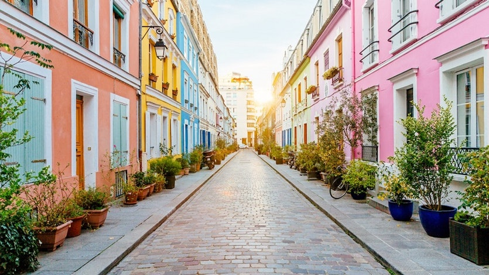

<html>
	<head>
		<title>
		Interactive website
		</title>
		<link rel="stylesheet" href="https://unpkg.com/leaflet@1.2.0/dist/leaflet.css"
   crossorigin=""/>
    <!-- Make sure you put this AFTER Leaflet's CSS -->
		<script src="https://unpkg.com/leaflet@1.2.0/dist/leaflet.js"
  
   crossorigin=""></script>
		<script src="leaflet-providers.js">
		</script>
		<style> 
			#mapid {
				width: 100%; 
				height: 100%; 
}
		</style>
	</head>
	<body>
		 <div id="mapid"></div>
	</body>
	<script>
	var mymap = L.map('mapid');
	
	mymap.setView([-34.8995977,138.6585174], 13);
	
	
	var layer1 = L.tileLayer.provider('OpenTopoMap');
	layer1.addTo(mymap);
	var greenIcon = new L.Icon({
  iconUrl: 'https://cdn.rawgit.com/pointhi/leaflet-color-markers/master/img/marker-icon-2x-green.png',
  shadowUrl: 'https://cdnjs.cloudflare.com/ajax/libs/leaflet/0.7.7/images/marker-shadow.png',
  iconSize: [25, 41],
  iconAnchor: [12, 41],
  popupAnchor: [1, -34],
  shadowSize: [41, 41]
});

var marker = L.marker([-34.8995977,138.6585174], {icon: greenIcon}).addTo(mymap);

	//var marker = L.marker([-34.8995977,138.6585174]).addTo(mymap);
	marker.bindPopup("<b>My house</b><br>This is my house.");
	var polygon = L.polygon([
	[-34.899489, 138.658733],
    [-34.899630, 138.658747],
	[-34.899628, 138.658570],
	[-34.899494, 138.658559]

]).addTo(mymap);
	
	var polygon1 = L.polygon([
	
	[-34.918516, 138.623979],
	[-34.943016, 138.628120],
	[-34.945760, 138.573052],
	[-34.918285, 138.582240]
]).addTo(mymap);
polygon1.bindPopup("<b>The CBD</b><br>This is the CBD.");

	var polygon2 = L.polygon([
	[-34.904164, 138.657730],
	[-34.903275, 138.675260]
	
]).addTo(mymap);
polygon2.setStyle(
{
color: 'black'
});
polygon1.setStyle(
{
color: 'red'
});

polygon2.bindPopup("<b>Arthur Street</b><br>This is Arthur Street.");
	</script>
</html>